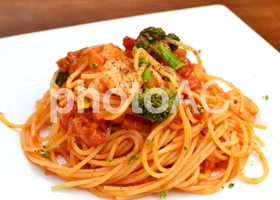

おいしすぎるトマトとモツァレラのパスタ

- 1.たっぷりのお湯に塩を入れて沸騰させる
- 2.パスタ茹でる
- 3.にんにくはみじん切り、バジルは大きければ半分くらいに切る。モッツァレラチーズは大きめの一口大に切る
- 4.茹で時間の２分前にザルにあげる
- 5.フライパンにニンニクとオリーブオイルをいれ、弱火であたためる
- 6.香りが出てきたらトマト缶を加え、中火でぐつぐつ煮る
- 7.パスタを加え、手早く混ぜながらソースを絡める
- 8.モッツァレラチーズを加え、塩で味を整える
簡単に作れる今日の献立を毎日一品ずつご紹介